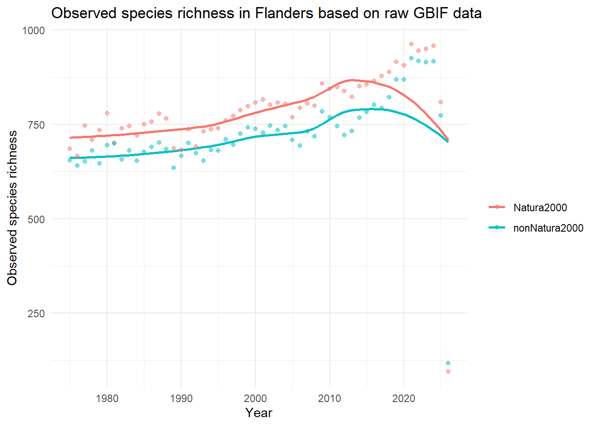
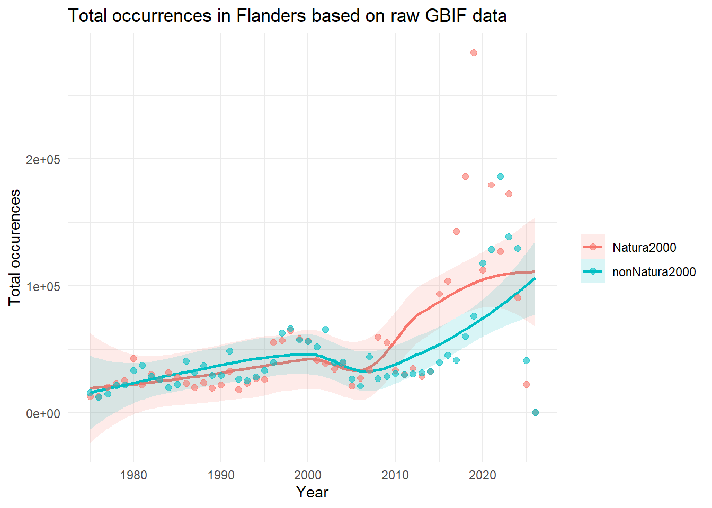
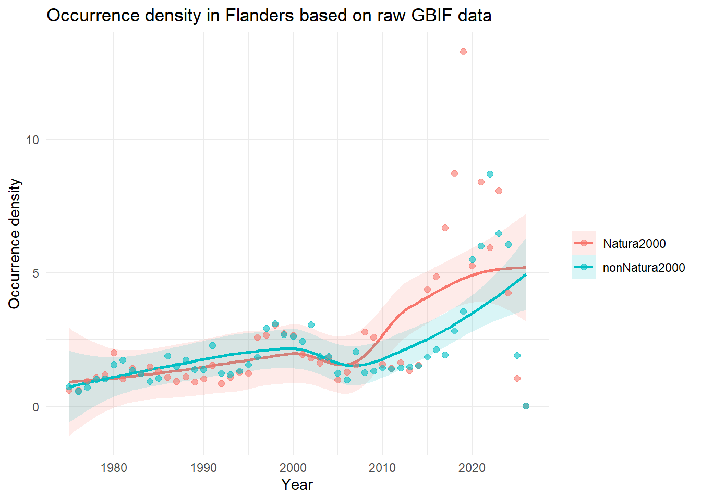
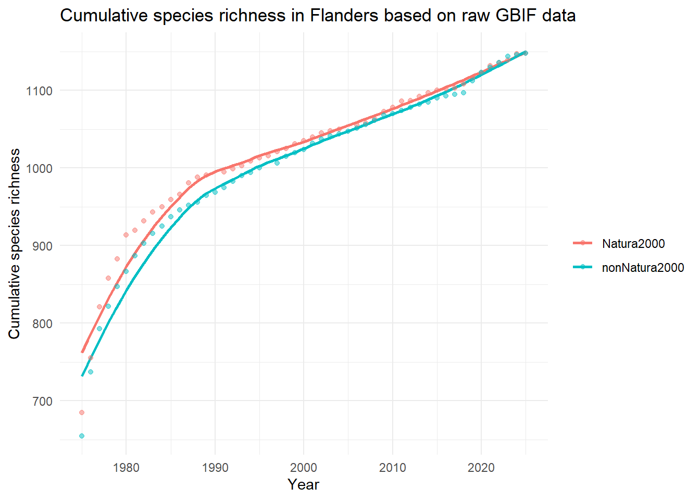
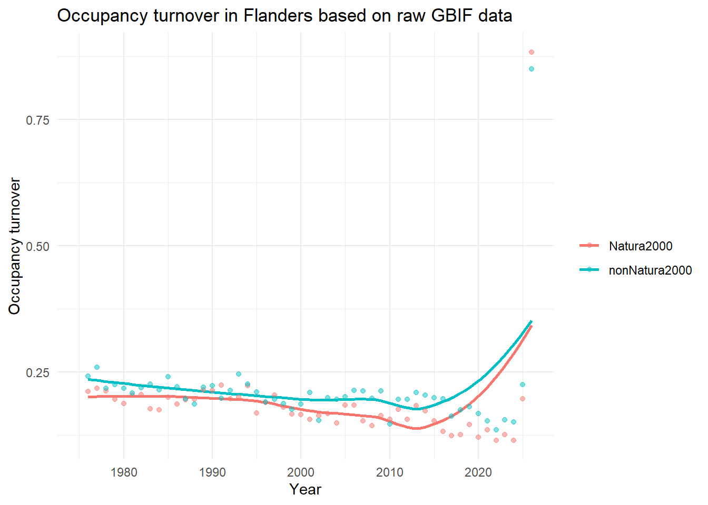
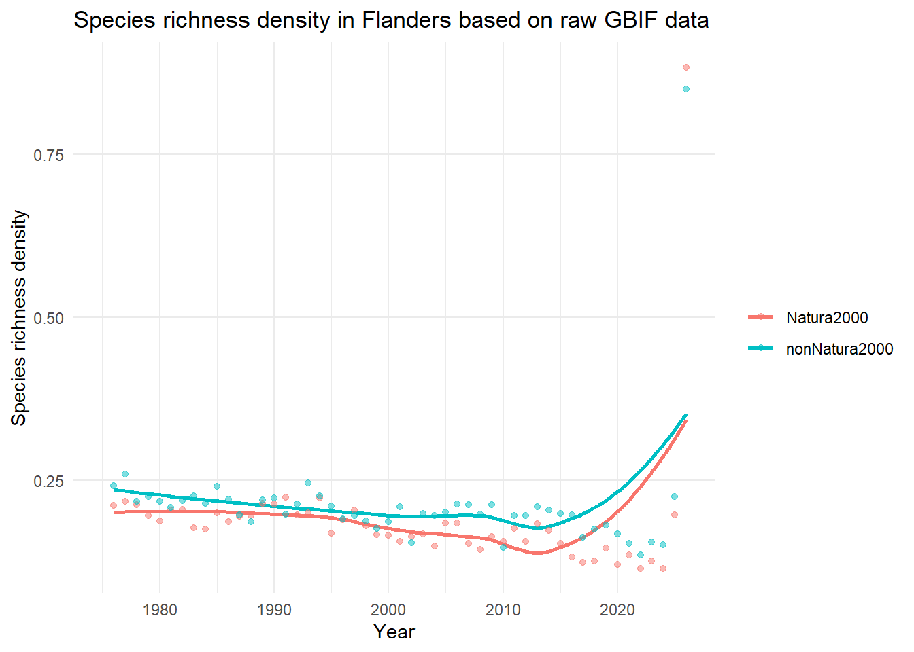
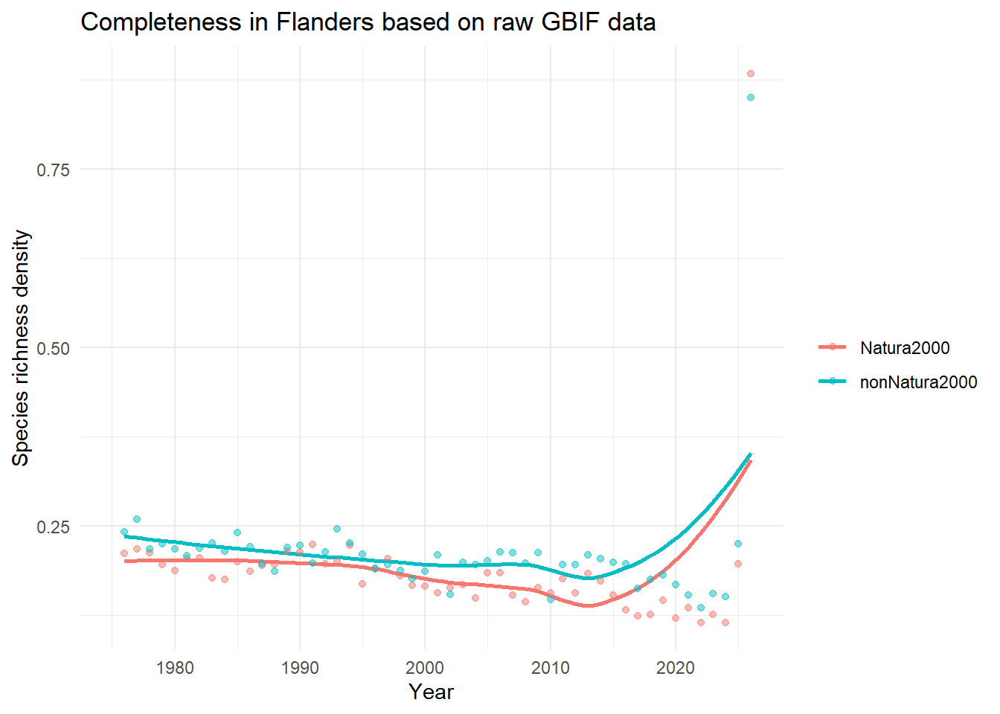

 General indicators Natura 2000 flowering plants
General indicators Natura 2000 flowering plants
TipObserved species richness
Indicator type
State indicator.
Explanation
Observed species richness represents the total number of unique species discovered and recorded. For maps, the value is calculated for each spatial cell. For time-series analyses, the value is calculated per time step over the complete data cube.
High value: A high number of unique species, indicating a diverse local community.
Low value: A low number of unique species, signalling a species-poor habitat.
Applicability for policy
This metric is necessary for determining biodiversity hotspots on a map or tracing potential declines in species richness over time. With taxonomic filtering, one can quantify the number of species in a particular cohort, such as known alien species, tree species, or carnivores.
Limitations
Observed species richness is highly sensitive to sampling bias and human observation effort. If certain grid cells are studied more carefully or visited more frequently by volunteers than others, they will artificially appear to have more species. Therefore, this metric should be interpreted within the context of a measure of survey effort, such as total occurrences or occurrence density. Furthermore, results are skewed by species detectability. Rare or widely dispersed species are easily missed by citizens, whereas highly conspicuous or easy-to-find species will often be reported (Hillebrand et al. 2018).
TipTotal Occurrences
Indicator type
Data quality indicator.
Explanation
The total number of occurrences is calculated by summing the occurrences of all species observed for each cell or year. For maps, the value is calculated for each spatial cell. For time-series analyses, the value is calculated per time step over the complete data cube.
- High value: A high number of occurrences has been submitted, signalling a hotspot for human outdoor activity or nature reporting.
- Low value: Relatively few occurrence records have been submitted, potentially indicating data “blind spots” where few people pass by and report observations. These ‘blind spots’ are also not part of long-term monitoring programs.
Applicability for policy
This metric indicates the degree and locations of citizen science engagement. It also helps to interpret other metrics more correctly by highlighting biases in survey effort over time and space. While not itself an indicator, it is vital for interpreting the results of calculated indicators.
Limitations
It indicates which locations are preferred for outdoor recreation and nature recording, rather than which locations are of conservation value. Though you will tend to get lower numbers of observations in an area with fewer species.

TipOccurrence Density
Indicator type
Data quality indicator.
Explanation
This metric measures the density of occurrence records by summing the number of occurrences per square kilometre within each grid cell. For maps, the value is calculated for each spatial cell. For time-series analyses, the density is summed across all grid cells in the data cube for each time step.
- High value: the grid cell contains a high concentration of occurrences.
- Low value: the occurrence records in this grid cell are sparse.
Applicability for policy
- Allows comparison of survey effort across scales: cubes with different grid sizes can easily be compared.
- Estimating citizen science engagement: it helps evaluate the true density of citizen science records.
However, these two interpretations are closely linked and can be difficult to separate. They should therefore be interpreted with caution and ideally in combination with other indicators or expert knowledge to ensure correct interpretation. Limitations
In case of citizen science data, this metric primarily reflects localised human search effort (like a popular walking path or a nature centre).
Limitations
In case of citizen science data, this metric primarily reflects localised human search effort (like a popular walking path or a nature centre).
Show the code
OD_ts_Natura2000 <- readRDS('./Flanders_Natura2000/OD_ts.rds')
OD_ts_nonNatura2000 <- readRDS('./Flanders_nonNatura2000/OD_ts.rds')
# stel: ts_nat en ts_non zijn output van indicator_ts voor twee subsets
df_nat <- as.data.frame(OD_ts_Natura2000$data) %>% mutate(Group = "Natura2000")
df_non <- as.data.frame(OD_ts_nonNatura2000$data) %>% mutate(Group = "nonNatura2000")
df_both <- bind_rows(df_nat, df_non)
ggplot(df_both, aes(x = year, y = diversity_val, colour = Group, fill = Group)) +
# groeps-trend
geom_smooth(se = TRUE, size = 1, alpha= 0.15) +
# ruwe punten
geom_point(alpha = 0.6, size = 2) +
labs(
x = "Year",
y = "Occurrence density",
colour = "",
fill = "",
title = "Occurrence density in Flanders based on raw GBIF data"
) +
theme(
legend.title = element_blank()
)+
theme_minimal() 
TipCumulative Species Richness
Indicator type:
Data quality indicator
Explanation:
Cumulative richness is calculated by adding only newly observed unique species each year to a cumulative sum. For maps, the value is calculated as a snapshot for each spatial cell. For time-series analyses, the value is calculated as a running cumulative sum for each sequential time step over the complete data cube.
Steep increase of the cumulative curve: Each timestep, new species are still being discovered for the first time in that region.
Shallow increase or flat cumulative curve: Almost no new species are being added to the historical list anymore.
Applicability for policy:
Data completeness check: If the cumulative richness line is steep, it indicates that the data is still incomplete and not all species are represented in the dataset.
Tracking new arrivals: In highly monitored regions where data is already complete, a sudden increase in cumulative richness can serve as a leading indicator for the arrival of invasive alien species or climate-driven species shifts.
Limitations
This metric is poorly suited to measuring rapid, negative biodiversity changes or current habitat degradation. Since it is a cumulative sum, the value never decreases. If a local extinction occurs or if common species crash in numbers, cumulative richness will completely ignore it and remain at its maximum.

TipMean Year of Occurrence (Newness)
Indicator type
Data quality indicator.
Explanation
This indicator measures the age distribution of records within a dataset. For spatial maps, it calculates the average (mean) year of all species occurrence records within a specific grid cell, indicating how recent or historical the data in that cell is. For time-series analyses, the value is calculated as a running historical average. It calculates a cumulative mean at each time step based on all records collected from the beginning of the dataset until that time point. This tracks how the ‘center of mass’ of the dataset changes over time as new records are added, revealing whether historical or newer records are dominant.
High value (recent mean year): The majority of the data in the grid cell was collected recently. This is often driven by citizen science data over the last few years.
Low value (older mean year): This indicates that a large portion of the species occurrence records consists of older museum collections or long-running monitoring programs.
Applicability for policy
Monitoring survey history: The indicator helps visualise how survey effort has evolved across space and time, highlighting areas that have been surveyed recently as well as regions with limited recent monitoring.
Data recency assessment: Grid cells with lower mean observation years rely more heavily on older records and may require re-surveying to ensure that management decisions are informed by up-to-date biodiversity data.
Limitations
A recent mean year is not necessarily an indication of quality, as some countries or regions have been conducting comprehensive biodiversity monitoring for many years and will therefore reflect an older mean year of occurrence, while others may show a recent mean year due to, e.g., the sudden availability of large amounts of citizen science data.
TipOccupancy turnover
Indicator type
Trend / Pressure Indicator.
Explanation
Occupancy turnover measures changes in species composition over time, reflecting the rate at which species appear or disappear from a given area between two time steps in the data cube. The metric is calculated using the Jaccard dissimilarity index (Jaccard, 1901), which compares the species present in two time steps and quantifies their dissimilarity on a scale from 0 to 1. High values (closer to 1): indicate a complete turnover in species composition between the two time periods. Low values (closer to 0): indicate little or no change in species composition between the two time periods. This indicator is available only as a time series.
Applicability for policy:
- Ecosystem stability: This is a vital tool for assessing how ecosystems have responded to large-scale pressures like climate change, habitat fragmentation, land use change or nitrogen deposition.
- Evaluating effectiveness of management strategies: It allows managers to evaluate whether restoration policies are actually working. For example, if a province creates a new wetland, a controlled increase in turnover might indicate that the targeted wetland species are successfully moving in.
- Invasive species: Biological invasions can result in high turnover rates.
Limitations
This measure is largely affected by survey effort. Further, it must always be combined with rarity or taxonomic indices to understand the true nature of the turnover shift (positive or negative for local biodiversity). Turnover timescales also differ across organism types. Mobile, short-lived species such as birds and insects exhibit faster turnover than sessile, long-lived tree species.

TipSpecies richness density
Indicator type
State Indicator.
Explanation
This indicator measures local biodiversity by dividing the total number of unique species by the surface area, representing the number of unique species found per square kilometre. For maps, the value is calculated for each spatial cell. For time-series analyses, species richness density is obtained by dividing the total number of unique species per year by the surface area of the entire cube.
- High value: The grid cell contains a high concentration of unique species.
- Low value: The area contains a low concentration of unique species.
Applicability for policy:
- Allowing comparison across scales: cubes with different grid sizes can easily be compared.
- Identifying hotspots of biodiversity. By including a filter at a higher taxonomic rank, richness can be compared between different orders or kingdoms.
Limitations
Observed richness is highly dependent on the comprehensiveness of the dataset it is being applied to. If some regions are more intensively, carefully or systematically sampled than others, this will likely reflect as higher observed richness. Observed richness also depends on the relative abundance and spatial aggregation of each species, with less abundant and less aggregated species less likely to be discovered during surveys (Hillebrand et al., 2018), as well as the detectability of each species.

TipCompleteness
Indicator type
Data quality indicator.
Explanation
This indicator estimates how complete our knowledge of an ecological community is by calculating “Sample Coverage” (a concept originally developed by Turing and Good (1953), and popularised by Chao and Jost (2012)). Instead of just counting the raw number of observations, it estimates the proportion of all individuals in the actual community that belong to the species we have already detected in our sample. For maps, the value is calculated for each spatial cell using all historical data for that cell. For time-series analyses, the value is calculated independently for each time step over the complete data cube.
High value (Value of 1.0 or 100%): The sample is almost complete, suggesting that further fieldwork or additional searches are unlikely to reveal many new species. Although other species might be present, they are likely very rare and/or have extremely low detectability.
Low value (Value of 0.2 or 20%, for example): The sample is incomplete. This suggests that while you have found some species, an estimated 80% of all individuals in that community belong to species that have not yet been detected or logged in the database.
Applicability for policy
An important indicator of data quality: This indicator is an absolute prerequisite for reliable, data-driven policymaking. If completeness is high, it ensures that any differences are real ecological trends rather than just reflections of uneven sampling sizes.
Tracing “blind spots”: This indicator allows environmental agencies to identify gaps in data coverage. A low completeness score in a given region signals the need for increased monitoring efforts.
Limitations
Completeness is a statistical correction tool calculated behind the scenes via the iNEXT package. It measures the reliability and maturity of the dataset, not the actual nature quality of the habitat. As species turnover occurs, and some species are highly mobile, a completeness of 1 is rarely, if ever, achieved.
